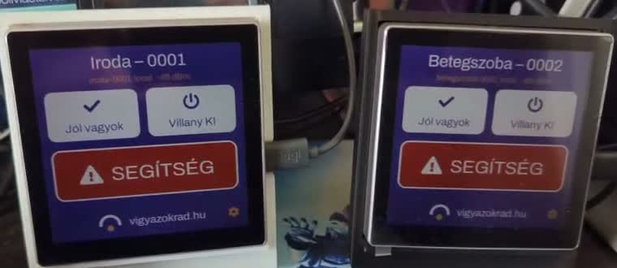
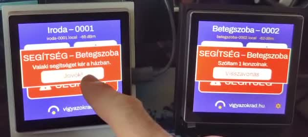

Vigyázok Rád
Eszközök, amik szólnak, ha baj van.
Már használható
Segítség
Ingyenes segélyhívó alkalmazás Androidra, nagy gombokkal. Egy koppintás: a telefon megkeresi, hol vagy, és SMS-t küld a családnak.
Az app oldalaÉpül
- Segítség konzol — fali panel, hogy vészhelyzetben ne kelljen telefont keresni.
- Gyógyszeradagoló — emlékeztet, és jelzi, ha kimaradt.
- Vizes palack — figyelmeztet, ha rég ivott valaki.
- Elesés-érzékelő nyaklánc
- Otthoni érzékelők — füst, gázszivárgás, szén-monoxid, kifolyó víz, kihűlő lakás.
- Mindegyik a Segítség appon vagy a konzolon keresztül riaszt — nem kell külön alkalmazást tanulni hozzájuk.
Közelebbről
A gyógyszeradagolóról
Most készül az elektronikája — és nem emlékeztetőnek. Nem az a veszélyes, ha valaki elfelejti bevenni a gyógyszerét, hanem az, ha úgy emlékszik, hogy bevette. Az emlék megvan, csak éppen hamis — és ez ellen egy emlékeztető tehetetlen.
Ezért ez a készülék nem kérdez rá, és nem hiszi el a választ. Két, egymástól független szinten igazolja vissza, hogy az adag valóban elhagyta a rekeszt. Amíg ez a visszaigazolás nincs meg, nem hagyja annyiban.
Ha a jelzést sokáig figyelmen kívül hagyják, és a kapszulák még mindig a rekeszben vannak, értesítés megy a hozzátartozónak vagy a gondozónak — a Segítség appon vagy a konzolon. Valakinek, aki fel tudja venni a telefont, és rákérdez.
Akiknek a legnagyobb szükségük van erre, azok látnak sokszor a legkevesebbet. Ezért: nagy betű, valódi kontraszt, tapintható gomb — és a szín soha nem az egyetlen jelzés. Ez az oldal is ezek szerint készült: a betűméret fent állítható, és nyelvváltáskor a képernyőolvasó is a megfelelő nyelvre vált.
A fali konzolról
Vészhelyzetben senki ne telefont keressen. A konzol a falon van, ott, ahol az ember amúgy is kapcsolót keres: egy nagy, piros SEGÍTSÉG gomb, és mellette két csempe — „Jól vagyok" és a villany.
De egy riasztás önmagában kevés. Aki megnyomta a gombot, azt is meg kell tudja, hogy jön valaki. Ezért a ház konzoljai szólnak egymásnak: a másik szobában megjelenik, hogy „SEGÍTSÉG — Betegszoba", és aki ott van, egyetlen gombbal válaszol: „Jövök!" — ez pedig ott jelenik meg annál, aki hívott.
Két igazi panellal, egy otthoni hálón mérve: a gombnyomástól a „Jövök!" válaszig tíz másodperc. A konzolok maguktól megtalálják egymást a hálózaton — nincs beállítás, nincs felhő, nincs előfizetés.
Ha a panel épp alszik (tizedére halványítva), a jelzés ugyanabban a másodpercben teljes fényre ébreszti. A sáv pedig kimondja, mi történt: „Szóltam 1 konzolnak." Ha téves riasztás volt, a Visszavonás mindkét panelről leveszi.


A közös elv
Egy elv, kétszer
Ez a két készülék nem két külön ötlet. Ugyanaz a mondat áll mögöttük, kétszer:
A gyógyszeradagolónál: egy emlékeztetés kevés — visszaigazolás kell.
A konzolnál: egy riasztás kevés — válasz kell.
Mind a kettő ugyanoda jut ki: a jelzés önmagában csak remény. Attól lesz belőle segítség, hogy visszaérkezik valami — egy igazolás, hogy megtörtént, vagy egy „Jövök!”, hogy valaki elindult. A legtöbb eszköz a jelzésnél megáll. A kör bezárása a nehezebb fele — és az a lényeg.
A prospektus
Két oldal A4-en, kinyomtatható formában: ami ma működik, ami jön, és a két készülék közös elve. Ugyanez a szöveg, egy lapra fogva.
Prospektus letöltése — PDF, 430 kB, 2 oldal